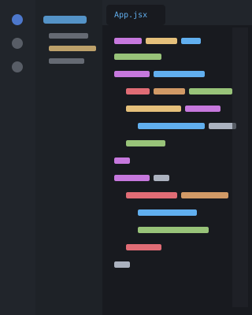
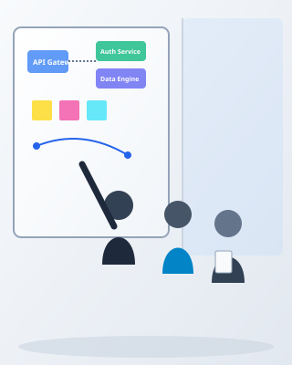
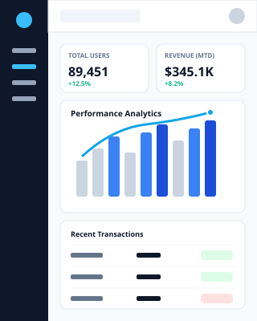

Vamos construir algo juntos!
Aqui você pode me conhecer melhor, ver meus projetos e acompanhar minha jornada na área de tecnologia.
Tecnologia e aprendizado
Sou estudante de Análise e Desenvolvimento de Sistemas e estou sempre em busca de novos desafios e conhecimentos.
Olá, eu sou Vinicius Gabriel, Desenvolvedor Web. Sou estudante de Análise e Desenvolvimento de Sistemas (ADS), apaixonado por tecnologia e desenvolvimento de software. Atualmente, estou desenvolvendo minhas habilidades em HTML e CSS, além de possuir conhecimentos em Git e GitHub para versionamento e gerenciamento de projetos. Também tenho conhecimentos iniciais em Python e JavaScript, linguagens que continuo explorando para ampliar minha capacidade de desenvolvimento.


